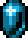
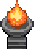
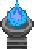
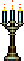

Vampire Survivors/아르카나

Vampire Survivors/아르카나
최근 수정 시각:


강력한 패시브 효과를 제공하는 '카드'이다. 갈로의 탑에서 유물 아이템 
 란도마조를 습득하거나, 특수 커맨드 입력 후 스테이지 선택 단계에 '아르카나' 모드가 추가된다. 사용할 수 있는 카드는 도전과제를 통해 추가로 해금할 수 있다.
란도마조를 습득하거나, 특수 커맨드 입력 후 스테이지 선택 단계에 '아르카나' 모드가 추가된다. 사용할 수 있는 카드는 도전과제를 통해 추가로 해금할 수 있다.
'아르카나' 모드를 사용하면 게임 시작 시 카드를 하나 선택하거나 랜덤한 카드를 뽑을 수 있으며, 이후 11분과 21분에 등장하는 보너스 몬스터[1] 처치 후 보라색을 띤 아르카나 보물상자[2]에서 카드를 추가로 드래프트하여 최대 3개의 카드 효과를 활성화할 수 있다. 각 카드의 이름은 악마성 시리즈의 BGM들에서 따왔으며, 이름/효과/카드그림 등은 실제 타로 카드를 레퍼런스 한 것도 존재한다.
반전 모드에서는 상인이 카드 1회 선택을 20,000골드에 판매하며 일부 DLC 스테이지에서는 시작부터 아르카나 상자 하나가 맵 내에 배치되어 있기도 하다.
레벨이 오를 때마다 능력(범위, 지속시간 등)을 영구적으로 높이는 아르카나는 선택한 시점부터 레벨이 오를 때마다 혜택을 제공한다.
설명문 하단에 적용되는 아이템이 나열되지만, 직접적으로 적용되는 것뿐만이 아닌 관련된/요구하는 능력치가 표시되기도 하는 등 별로 직관적이지는 않다. 이 문서에서는 직관성을 위해 직접적으로 적용되는 무기만 기재한다.
란도마조를 습득하거나, 특수 커맨드 입력 후 스테이지 선택 단계에 '아르카나' 모드가 추가된다. 사용할 수 있는 카드는 도전과제를 통해 추가로 해금할 수 있다.'아르카나' 모드를 사용하면 게임 시작 시 카드를 하나 선택하거나 랜덤한 카드를 뽑을 수 있으며, 이후 11분과 21분에 등장하는 보너스 몬스터[1] 처치 후 보라색을 띤 아르카나 보물상자[2]에서 카드를 추가로 드래프트하여 최대 3개의 카드 효과를 활성화할 수 있다. 각 카드의 이름은 악마성 시리즈의 BGM들에서 따왔으며, 이름/효과/카드그림 등은 실제 타로 카드를 레퍼런스 한 것도 존재한다.
반전 모드에서는 상인이 카드 1회 선택을 20,000골드에 판매하며 일부 DLC 스테이지에서는 시작부터 아르카나 상자 하나가 맵 내에 배치되어 있기도 하다.
레벨이 오를 때마다 능력(범위, 지속시간 등)을 영구적으로 높이는 아르카나는 선택한 시점부터 레벨이 오를 때마다 혜택을 제공한다.
설명문 하단에 적용되는 아이템이 나열되지만, 직접적으로 적용되는 것뿐만이 아닌 관련된/요구하는 능력치가 표시되기도 하는 등 별로 직관적이지는 않다. 이 문서에서는 직관성을 위해 직접적으로 적용되는 무기만 기재한다.
Ο - 게임 킬러(Game Killer)[3]
- 효과: 경험치 보석 획득 시 경험치를 획득하지 않고 대신 가까운 적에게 날려 폭발을 일으킨다. 모든 상자의 보상이 기본적으로 3개가 된다.
- 대상 아이템:


경험치 보석,
 보물상자
보물상자 - 해금: 마그나 예배당에서 마지막 적을 처치한다.
- 운용 팁: 경험치를 무기로 바꾸는 아르카나로 당연히 통상적인 레벨업이 막힌다. 대신 레벨업이 불가능하다는 특징을 활용해서 1레벨에 강력한 보너스를 가진 캐릭터(포르타 라돈나, 암브로조 경, 시스터 클레리씨)의 능력을 게임 내내 활용할 수 있다. 또한 레벨이 오를수록 저주가 증가하는 교룬톤의 성장을 막는 데도 사용할 수 있다. 이외에는 가끔 색다른 게임이 하고 싶을 때 꺼내는 정도.
새미는 금화를 입수할 때 경험치를 얻을 수 있어 이 아르카나를 선택해도 정상적으로 레벨업이 가능하다. - 기본 소지: 벼룩맨

I - 쌍둥이자리(Gemini)[4]
- 효과: 대상 무기의 복제 무기를 생성한다.
- 해금: 푸냘라로 레벨 50을 달성한다.
- 운용 팁: 복제 무기는 원본 무기와 공격방식이 비슷하지만 반대편이나 반전된 방향으로 공격하는 등 약간의 차이가 있다. 복제된 무기에 따라 적용되는 아르카나들이 조금씩 다르지만, 원본 무기를 한계돌파할 때는 동일한 효과를 얻는다. 무기별 사양은 복제 무기 문단 참고. 복제 무기는 진화가 되지 않으며, 진화를 하고 선택해도 진화 전 무기만 나온다. 이 때문에 낼 수 있는 포텐셜에 한계가 있어서 강력한 아르카나로 봐주기는 힘들다.
1.15 버전 기준으로는 사실상 벨나데스의 주문서 무기 전용 아르카나로만 취급된다. 해당 무기들은 특이하게 진화 후 무기까지 그대로 복제되기 때문에 타 무기에 비해 밸류가 높다. 한두 개 정도만 채용했다면 크게 유용하지는 않지만, 그 이상으로 도배한다면 고려해 볼 가치가 있다. - 기타: 복제 무기는 컬렉션이 존재하며, 등록하기 위해서는 원본 무기와 이 아르카나를 집어 복제 무기를 생성해야 한다. 은근히 귀찮은 조건이다.


II - 황혼의 진혼곡(Twilight Requiem)[5]
- 효과: 대상 무기의 투사체가 소멸할 때 좌우로 넓은 범위의 폭발을 일으킨다.
- 해금: 돔마리오로 레벨 50을 달성한다.
- 운용 팁: 폭발은 저주의 수치만큼 공격력이 추가로 증가한다. 작동 방식이나 폭발의 판정은 괜찮지만 불의 심장과 마찬가지로 무기 공격력이라는 게 레벨 업과 진화의 영향을 받지 않은, 비진화 1레벨 기준의 무기 공격력이기 때문에 실제 딜이 형편없다. 1.14 패치 후로 불의 심장의 딜량이 크게 상승하며 추가 딜링 계열 아르카나 최약체로 떨어졌다.


- 효과: 움직일 때 대상 무기의 쿨타임이 크게 감소한다.
- 해금: 포르타로 레벨 50을 달성한다.
- 운용 팁: 캐릭터의 이동속도가 빠를수록 쿨타임 감소량도 많아진다. 쿨타임 감소 효과는 최대 쿨타임 감소 상한을 넘어서도 적용되지만, 투사체 제한을 넘기지는 못하기에 지속시간 계열 무기와는 시너지가 별로다. 비슷한 이유로 쿨타임을 극도로 줄이는 게 가능하다면 있으나 마나 한 아르카나가 된다.


IV - 각성(Awake)[9]
- 효과: 부활 횟수 +3, 부활할 때마다 체력 +10%, 방어력 +1, 피해량/범위/지속시간/투사체 속도 +5%. 중첩 가능
- 대상 효과:

 모든 부활 효과
모든 부활 효과 - 해금: 크로치로 레벨 50을 달성한다.
- 운용 팁: 기본 부활 횟수는 강화 1, 티라미수 2, 아르카나 효과 3 해서 6번이고, DLC 2 스테이지에서는 아카데미 배지를 입수해 총 8번이 된다. DLC 4 스테이지에서는 4번까지 추가로 확보할 수 있고, DLC 4의 무기를 진화한다면 최소 1번부터 6번까지 추가로 확보할 수 있다.
클리어 및 도전과제 해금 특화 아르카나로, 아무리 어려운 난이도라고 해도 이 아르카나와 티라미수를 집으면 거진 클리어가 가능하다. 이를 통해 특정 캐릭터 50렙 달성이나 특정 맵 31분까지 생존하거나 사신을 처치한다. 도전과제를 깨는 데에도 매우 좋다. 아이템, 캐릭터 패시브 상관없이 어떻게든 부활하면 무조건 능력치 증가를 받고 중첩도 되므로 반지와 메탈리오를 지키는 아틀란티스인에게 들이박아서 몇 번 죽으면 잡몹은 건들 수도 없는 방어력과 넉넉한 능력치를 확보할 수 있다. 작정하고 추가로 갑옷으로 방어력을 9 이상 올리고 진홍의 망토까지 채용하면 모든 대미지가 1만 들어와 체력 유지 수단 하나만 있으면 절대로 죽을 수 없는 상황을 만들 수도 있다.
하지만 죽을 일이 없다면 아르카나를 써먹을 일도 없어서, 능력치를 펌핑해뒀거나 처음부터 강한 캐릭터에게는 별로 유용하지 않다. 부활 수가 증가하는 만큼 클리어 골드가 늘어나긴 하지만, 그 용도로 쓰기에는 황금 디스코가 백 배 낫다. 달빛 볼레로를 채용한 상태에서 30분에 아르카나 상자가 드롭되었을 때 말고는 돈벌이로 쓸 일은 없다.
- 효과: 매 레벨마다 투사체 속도 +1%, 10초 주기로 투사체 속도 증감 적용 (-50% ~ 50%)
- 대상 효과:

 투사체 속도의 영향을 받는 모든 무기와 아이템, 특수능력
투사체 속도의 영향을 받는 모든 무기와 아이템, 특수능력 - 해금: 지오반나로 레벨 50을 달성한다.
- 운용 팁: 투사체 속도 증가는 총 투사체 속도 능력치에 곱연산으로 적용된다. 또한 총 투사체 속도 능력치가 최대 상한에 도달하더라도 아르카나 효과가 적용되어 상한을 넘은 수치까지 적용된다.
- 기타: 민나 만나라 캐릭터는 자체적인 패시브 증감 효과를 가지고 있어서 레벨당 투사체 속도 증가 효과만 적용된다.
VI - 치유의 사라반드(Sarabande of Healing)[12]
- 효과: 모든 회복량 2배, 회복 시 회복량에 비례한 범위 공격 발동
- 대상 효과: 모든 체력 회복 효과
- 해금: 란도마조 획득 시 바로 해금된다.
- 운용 팁: 적용 범위가 매우 넓다. 치킨과 작은 하트는 물론이요 스탯창의 회복, 심지어 부활 시 채워지는 절반의 체력까지 회복으로 판정된다. 회복할 때마다 광역으로 대미지를 주고 밀쳐내는 파동이 발생하며, 이 파동은 범위와 공격력의 영향을 받는다. 회복 무기와 조합하면 광역기가 되기는 하나, 코스모 파보네나 미앙 문스펠이 아닌 이상 회복 수치에는 한계가 있고 넉백이 심하기에 한계가 큰 편이다. 특히 반전 모드 고저주 플레이 중이라면 그냥 넉백 셔틀로 전락하기 쉽다. 제트 블랙의 방랑이 등장하고 나서는 그쪽이 훨씬 강력하기 때문에, 이 아르카나는 제트 블랙의 방랑의 피해량 성장치를 높이는, 다르게 말하면 시녀로 채용된다.
- 효과: 투사체가 3번까지 튕기고 벽과 몹을 관통한다.
- 해금: 젠나로로 레벨 50을 달성한다.


VIII - 광기의 그루브(Mad Groove)[18]
- 효과: 매 2분마다 모든 스테이지 아이템, 드롭 아이템, 화로를 캐릭터 쪽으로 끌어옴.
- 해금: 광기의 숲에서 31분까지 생존하거나 사신을 처치한다.
- 운용 팁: 2분마다 팡파레 소리와 함께 모든 아이템을 화면 내에 원 형태로 모아준다. 치킨이나 묵주 등 드롭 아이템과 화로는 일정 수 이상이 되면 더 넓은 동심원에 배치된다. 스테이지 아이템은 원 상단에 배치되고, 상자는 하단에 배치된다. 스테이지 아이템을 수호하는 적은 따로 스폰되지 않으며, 반지와 메탈리오를 수호하는 아틀란티스인은 아이템을 발견했을 때 입수 여부와 관계없이 스폰된다. 아르카나 입수 전에 아이템 근처에 찾아가서 미리 스폰시킨 뒤라도 다시 스폰된다.
능력치 상승은 없지만 매우 강력한 유틸성을 지닌 아르카나로, 누수된 아이템과 멀리 떨어진 아이템을 전부 갈무리해 주기 때문에 편의성 면에서는 최강을 다툰다. 특히 스테이지 아이템을 이용한 빌드를 사용하기 매우 쉽게 만들어준다. 아르카나 추가 전에는 느린 캐릭터는 스테이지 아이템을 사용하기 힘들었고, 빠른 캐릭터라도 뒤에 남겨지는 상자와 경험치 때문에 1~2개 이상 쓰기 힘들었던 게 완전히 뒤집힌 셈이다. 아르카나가 3장으로 제한되는 일반 모드에서는 여유가 없어서 안 쓰일 때도 있으나, 4장으로 제한이 보다 널널한 반전 모드에서는 자주 쓰인다. 물론 유물 아이템이나 관 등은 끌려오지 않으니 직접 가서 챙겨야 한다. - 기타: 골드 핑거는 예외적으로 끌려오지 않으며, 1.9.0 패치에서는 DLC 스테이지에 배치된 아르카나 상자도 끌려오지 않게 되었다. 1.9.0 베타 당시에는 설정이 꼬여서 일반 상자도 끌려오지 않았다. DLC 4 패치로 다시 아르카나 상자가 끌려오게 바뀌었다.
IX - 신성한 혈통(Divine Bloodline)[19]
- 효과
- 캐릭터와 접촉한 적은 <방어력 x 10> 에 해당하는 반격[24] 피해를 입는다. (최대 500)
- 모든 "반격 피해"로 적을 처치할 때마다 최대 체력이 0.5 증가한다.
- 해금: 시스터 클레리씨로 50 레벨 달성
- 운용 팁
주로 반격을 이용한 버서커 플레이를 위한 아르카나로 쓰인다. 다만, 반격 무기들과의 시너지로 엄청난 체력과 피해량 펌핑이 가능하므로 초반만 넘긴다면 엄청나게 강하면서 죽지도 않는 사실상 유사 무적 플레이가 가능해진다. "반격 피해" 무기를 하나만 집고 딱히 신경 쓰지 않아도 최대 체력이 몇 천에서 만 단위까지 올라가며, 아예 각 잡고 반격 빌드를 짜면 15~20만대의 최대 체력을 보유하고 1.5~2만대의 추가 피해를 모든 공격에 달 수 있다.
반격 빌드를 쓰기 위해서는 이 아르카나만으로는 부족하고, 반격 무기와 자해가 추가로 필요하다. 반격 무기로는 절멸(카니지 하트), 승리의 검, 진홍의 망토, 파코 바틸리아(마조 파밀리아), 가이아의 포옹, 밤의 검(무라마사), 에스키치버(레지오네어), 아이언 실드(다크 아이언 실드)가 존재하며 자해 효과를 가진 무기로는 마녀의 고양이, 무라마사, 도미누스의 분노/증오/고뇌(전하의 힘)이 존재한다. 고양이가 딜량은 가장 높지만, 행운이 높을수록 자해가 발동 확률이 내려가므로 고행운 캐릭터는 치킨을 봉인하고 무라마사나 도미누스 시리즈를 사용하는 게 좋다.
자해 무기를 사용하지 않고도 낮은 체력(높은 피해량)을 유지하는 방법으로는 체력을 회복시켜 주는 치킨류 아이템을 밴 해두는 방법과 피격데미지가 높은 몹들에게 고의적으로 피격당하는 방법이 있다. 전자는 게임 초반이 상당히 어려워지지만 치킨을 자주 생성하는 무기들이나 미래에서 온 우박과의 역시너지를 없앨 수 있어서 좀 더 다양한 조합이 가능해진다. 후자도 상당히 유용한데, 몸박 데미지가 높은 보스 몹들도 좋지만 좌/우 메탈리오와 금/은반지 근처에서 생성되는 아틀란티안은 몸박 데미지가 상당히 높기 때문에 최대체력이 엄청나게 높아진 게임 후반에 부활을 하거나 체력이 차더라도 낮은 체력을 만들기가 가능해진다.[25]
다른 무기들은 범위가 넓거나 상술한 방어력 비례 추가 피해가 적용되는 무기 위주로 해두는 것이 좋다. 단 성경이나 마늘, 마나의 노래 등 캐릭터 보호를 잘 하는 무기들은 반격 빌드에서는 거꾸로 몸통박치기를 방해하는 요소가 되기에 자해 무기가 갖춰지기 전까지는 고르지 않는 것이 좋다.
장신구는 갑옷은 필수요소고, 다른 빌드라면 최우선적으로 지워버렸을 검은 심장은 아예 최중요 딜 장신구로 쓰인다. 체력 증가 효과를 많이 볼 수 있게끔 최대한 마지막에 몰아 찍는 것이 좋다. 반대로 회복 수단은 가능한 한 제한해야 한다. 붉은 심장은 지우고, 고양이를 자해 무기로 선택했을 때에 한해 생체 반응 스캔이나 은빛 바람 1~2 레벨 정도만 놔두는 것이 좋다. 무라마사를 자해 무기로 쓸 작정이라면 게임 시작 전에 미리 치킨을 봉인해둬야 한다. 고정 대미지의 비율이 높으므로 시금치는 치워버리는 게 낫다.
시너지가 있는 아르카나로는 절단과 각성, 불의 심장이 있다. 절단은 그렇지 않아도 높은 대미지를 치명타로 더 뻥튀기시키고, 각성은 죽으면 죽는 대로 방어력 보너스를 받고 안 죽으면 안 죽는 대로 외줄타기의 리스크를 줄여준다. 불의 심장은 몬스터와 부딪히면서 발생하는 폭발 또한 반격피해이므로 무기가 약한 초반에도 최대체력이 엄청난 속도로 증가하며, 자연스럽게 피해량도 늘어 몸박만으로도 몹들을 상당히 잘 잡게 된다. 다만, 무기가 어느 정도 강화된 중후반에는 거의 발동하지 않기에 사실상 초반 전용 조합이다. 한계돌파는 범위나 투사체 수 위주로 하는 것이 좋다. 고정 피해의 비율이 높으므로 공격력이 증가해도 큰 티가 나지 않는다.
황금알을 많이 먹이면 회복이 지나치게 높아져 체력이 줄지를 않아 빌드가 죽어버리므로, 제한을 두는 것이 좋다. 많아도 100~200개 정도에서 그치는 것이 좋다. 이외에도 빌드가 제대로 굴러가는 데 DLC를 2개나 요구하고, 진화 의존도가 높아 10분 전에 진화 상자가 나오지 않는 스테이지에서는 많이 괴로운 등 제약이 많지만 모든 빌드 중 가장 압도적인 딜뽕이라는 확고한 매력이 존재한다. 빌드업이 제대로 됐다면 반전모드에 토로나 9레벨까지 적용된 29분 웨이브를 솜사탕처럼 녹이고 같은 조건에서 아틀란티스인도 3초컷을 내버린다. 빈 체력이 10만 단위로 쌓였다면 사신도 오래 못 버틴다.

X - 근원(Beginning)[26]
- 효과: 대상 무기의 투사체 수 1 증가, 캐릭터의 기본 무기와 그 진화 무기는 투사체 수 3 증가
- 해금: 안토니오로 레벨 50을 달성한다.
- 운용 팁: 상인이 파는 5종의 무기의 투사체를 1 증가시킨다. 또한 전체 캐릭터의 모든 기본 무기와, 그 진화 무기의 투사체를 3 증가시킨다. 붉은장미 덩쿨처럼 일반 무기와 진화 무기를 합쳐 진화하는 연합 무기는 일반 무기 쪽이 기본 무기여야지 적용되고 진화 무기 쪽이 기본 무기일 때는 적용되지 않는다. 그리고 당연하지만 기본 무기가 투사체 수의 영향을 받지 않는다면 적용되지 않는다.
수동 한계돌파로 시작 무기의 투사체 수 증가를 3번 선택하는 것과 다를 바 없고, 시작 무기가 투사체 수의 영향을 받지 않으면 아무 효과도 없어서 별로 효율적인 아르카나는 아니다. 1무기 제한을 걸어봤자 고요한 옛 성역의 하위호환에 불과하고, 라 로바와 시너지가 있다지만 라 로바도 수동 한계돌파로 투사체 수 1개를 고르면 효과가 같아진다. - 기타


XII - 한도초과(Out of Bounds)[28]
- 효과: 얼어붙은 적이 폭발을 일으킴, 회중시계 생성 확률 증가 및 화로에서 소르베토가 생성될 확률이 생김
- 해금: 갈로의 탑에서 31분까지 생존하거나 사신을 처치한다.
- 운용 팁
- 아르카나 설명에 나열된 무기들은 엄밀히 말해 자체적으로 빙결 효과가 있는 무기고, 실제로는 빙결 효과 자체가 진짜 적용 대상이다. 단, 모자의 빙결 효과만은 예외로 적용되지 않는다.
- 공격력은 기본 10에 추가로 30초마다 1씩 증가하며, 피해량과 공격 범위 능력치의 영향을 받는다. 표기 딜량은 낮지만 폭발이 제한 없이 발생하기에 실제 딜량은 결코 낮지 않다.
- 수정 감옥 아르카나를 적용받는 무기들도 한도초과 효과가 적용되어 폭발 공격을 일으킨다. 다만 모자는 적을 얼리는 효과가 있지만 한도 초과가 적용되지 않는다.
- 이 아르카나를 장착하면 화로를 파괴할 때마다 낮은 확률로 은두자 프라타의 빙결 버전인 소르베토가 생성되는데, 공격 방식은 은두자 프라타와 동일하고 딜량은 훨씬 낮지만 확정적으로 빙결시키는 효과가 있다.
- 기타
- 이 아르카나를 집으면 시곗바늘이 기본 무기인 갈로도 공격이 가능해진다. 덕분에 갈로도 1무기 클리어가 가능하다.
- 해당 아르카나는 추가 초기에는 왠지 반격 피해로 판정됐었다. 따라서 방어력의 영향을 받아 대미지가 증가했으나, 0.11 패치로 수정되었다. 뱀서 위키에서는 불의 심장 효과를 복붙하다 발생한 실수로 추정하고 있다. 패치노트를 뒤져보면 비슷하게 추가 당시에는 반격 피해였다가 나중에 수정된 아이템이 많다.


XIII - 사악한 계절(Wicked Season)[29]
- 효과: 일정한 간격으로 전체 성장, 행운, 탐욕, 저주 중 하나의 능력치가 두 배로 증가, 매 2레벨마다 성장, 행운, 탐욕, 저주 +1%
- 해금: 크리스틴으로 레벨 50을 달성한다.
- 운용 팁: 주로 성장 증폭을 보고 채용하는 아르카나다. 성장과 저주는 레벨링의 속도와 총량에 직접적으로 관여하며 한계돌파의 횟수를 늘려주고, 행운은 확률성 옵션을 가진 무기를 강화시키고 사탕상자 2종과 각종 필드 아이템의 등장 확률을 높여 추가적인 강화 수단을 마련해 준다. 탐욕은 게임 내에서는 별 효과가 없으나 최종 골드 수급량이 증가하기에 강화나 황금알 구매를 할 수 있다. 여기에 레벨당 4개 능력치 보너스도 존재하므로 채용할 생각이라면 1번째로 하는 것이 좋다. 반전 모드라면 상인에게서 구입해도 된다.
세세하게 신경을 쓸수록 효율이 더 오르는 아르카나다. 은/금 상자나 사탕상자가 필요하다면 행운 2배 타이밍에 보물상자를 집고, 보물상자에서 기대할 수 있는 걸 전부 뽑아먹었다면 탐욕 2배 타이밍에 집어 수급 골드를 더 늘릴 수 있다. 저주 2배 타이밍에 붉은 보석을 아껴뒀다가 성장 2배 타이밍에 먹어 폭렙을 할 수도 있다.
다만 증가하는 능력치 중 저주가 끼어 있다는 점 때문에 가볍게 도전할 만한 아르카나는 못 된다. 빌드업이 부족하거나 꼬였다면 저주 2배 타이밍에 적들이 쏜살같이 밀려들어와 그대로 짓밟힐 수 있다. 특히 반전모드나 고난이도 챌린지 스테이지라면 살아남기가 정말로 고역이다. 저주 2배 타이밍이 아니더라도 대부분 스테이지의 28~29분 웨이브는 적의 덩치와 스폰량 때문에 마늘 넉백이고 빙결이고 자시고 절대로 접근을 막을 수 없으므로, 즉사 무기로 둘둘 말거나 위대한 기념제 매혹구 조합으로 회중시계를 무한 수급하거나 방어력 9 진홍의 망토같이 불괴가 될 수 있는 수단을 마련해야 한다.
시너지가 있는 무기는 주요한 해결책이다. 진화를 행운 2배나 저주 2배 타이밍에 해 둔다면 저주 2배 구간의 대부분을 무적으로 넘길 수 있고 무적 상태 동안 빨려들어온 경험치는 성장 2배 구간에 입수되므로 누수 없이 성장 보너스를 받을 수 있다. 단, 렉이 걸리면 타이밍이 어긋나니 게임 켜두고 다른 작업을 하는 건 피하는 것이 좋다. 이외에는 상술했듯 매혹의 달과 오피온, 긴급 회의 등 즉사 무기를 마련하는 것도 좋다. 혹여 행운을 400% 이상 올렸다면, 조금 불안정하긴 하지만 위대한 기념제의 광원 생성으로 묵주와 회중시계를 수급해서 버틸 수도 있다. - 기타: 아르카나 획득 시 적용 중인 효과와 지속시간을 캐릭터 아래의 부채꼴 모양으로 알려준다. 효과 하나당 지속시간은 10초이며 하나의 효과가 끝나면 즉시 다음 효과로 이어진다. 매 2레벨마다 증가하는 것이 아니라 1레벨당 0.5%씩 증가한다.
XIV - 수정 감옥(Jail of Crystal)[30]
- 효과: 대상 무기에 행운에 기반한 빙결 확률이 부여되며, 이미 빙결 효과가 있는 무기라면 확률이 크게 증가한다.
- 해금: 파스콸리나로 레벨 50을 달성한다.
- 운용 팁: 빙결 확률은 기본 25%이며, 행운 수치에 영향을 받아 증가한다. 행운 300%에서 확정 빙결 효과를 갖는다. 행운이 높은 캐릭터로 쓰거나, 사악한 계절 아르카나와 연계하는 것이 좋다.
한도초과의 세트 파츠로 취급된다. 단독으로 사용하기에는, 딜 기여도는 전무한데 빙결로 발만 묶는 트롤 아르카나가 되므로 활용도가 떨어진다. 오피온과 연계해서 즉사 장판에 묶어두는 게 최대한의 활용처다.


XV - 황금 디스코(Disco of Gold)[31]
- 효과: 금화 주머니를 습득할 때마다 골드 피버 발동. 골드 획득 시 체력 회복
- 대상 효과:
 탐욕
탐욕 - 해금: 화려한 도서관에서 31분까지 생존하거나 사신을 처치한다.
- 운용 팁: 주로 골드 벌이용으로 쓰이지만, 골드 획득 시 체력이 회복되기에 체력 회복용으로도 쓰일 수 있다. 골드 획득으로 인한 체력 회복은 습득한 골드의 수량에 비례한다. 회복치는 오로지 탐욕 능력치의 영향만 받고 회복 능력치의 영향은 적용받지 않는다. 단 치유의 사라반드 아르카나의 회복량 2배는 적용된다.
시너지가 있는 무기로는 흉포한 굶주림, 위대한 기념제, 밀리어네어가 존재한다. 흉포한 굶주림은 골드 획득 절대치를 높이고, 위대한 기념제는 광원 생성으로 골드 피버를 더 자주 터트릴 수 있다. 밀리어네어는 골드를 획득할 때마다 일시적으로 투사체 수가 증가하는 특유의 기믹과 잘 맞는다.
뼈의 대지에서는 거의 필수 아르카나로 사용된다. 뼈의 대지는 광원에서 금화와 10골드짜리 주머니만 드롭되기 때문에 체력 관리가 힘든데, 이 아르카나를 채용하면 반대로 다른 스테이지보다 골드 피버를 더 자주 터트릴 수 있으며 회복 때문에 체력 관리도 신경 쓸 필요가 없어진다. 다른 스테이지라도 아르카나 자리가 남으면 최우선적으로 채용된다. - 기타: 상자에서 나온 금화 주머니와 루미네어로 금화 주머니로 변한 금화는 습득해도 피버 타임이 발생하지 않는다.


XVI - 절단(Slash)[32]
- 효과: 대상 무기의 치명타 피해를 2배로 증가시키고, 치명타가 발동하지 않는 무기라면 치명타 확률을 활성화시킨다.
- 대상:
 단검,
단검, 
 천 개의 칼날,
천 개의 칼날,  채찍,
채찍,  피눈물,
피눈물,  도끼,
도끼,  죽음의 나선,
죽음의 나선,  천상의 검,
천상의 검,  성스러운 바람,
성스러운 바람,  붉은장미 덩쿨,
붉은장미 덩쿨,  승리의 검,
승리의 검, 
 천상의 장창,
천상의 장창, 
 산타 재블린,
산타 재블린,  세라픽 크라이,
세라픽 크라이, 
 무라마사,
무라마사, 
 에스키치버,
에스키치버, 
 레지오네어,
레지오네어,  섬광의 화살,
섬광의 화살,  밀리어네어,
밀리어네어,  임포스메롱,
임포스메롱, 
 연금술 채찍,
연금술 채찍,  뱀파이어 킬러,
뱀파이어 킬러,  윈드 채찍,
윈드 채찍, 
 스피릿 토네이도 팁,
스피릿 토네이도 팁,  플래티넘 채찍,
플래티넘 채찍, 
 크로스 크래셔 팁,
크로스 크래셔 팁,  드래곤 워터 채찍,
드래곤 워터 채찍,  하이드로스토머 팁,
하이드로스토머 팁,  소닉 채찍,
소닉 채찍, 
 미치광이의 두개골,
미치광이의 두개골,  제트 블랙 채찍,
제트 블랙 채찍,  모르메길 팁,
모르메길 팁,  비부티 채찍,
비부티 채찍,  데이브레이커 팁,
데이브레이커 팁,  색즉시공 채찍,
색즉시공 채찍,  오라블러스터 팁,
오라블러스터 팁,  튀르핑,
튀르핑,  룬 검,
룬 검,  콘포데레,
콘포데레,  볼 콘포데레,
볼 콘포데레,  멜리오 콘포데레,
멜리오 콘포데레,  포켓 나이프,
포켓 나이프,  클레임 솔레,
클레임 솔레,  아치 앵글,
아치 앵글,  죽음의 유산: 소울 리버,
죽음의 유산: 소울 리버,  밀리언 컷, 트윈 드래곤, 게카비진, 쿠쿠리, 제트스트림, 불로바, 호크윈드, 플랑베르주, Zweihander, 갈라틴, 그로스 미셸, 캐번디시
밀리언 컷, 트윈 드래곤, 게카비진, 쿠쿠리, 제트스트림, 불로바, 호크윈드, 플랑베르주, Zweihander, 갈라틴, 그로스 미셸, 캐번디시 - 해금: 라마로 레벨 50을 달성한다.
- 운용 팁: 치명타 대미지 2배 증가는 DPS 2.5배 증가로 계산된다. 기본 크리티컬이 없던 무기는 절단 아르카나를 적용하면 대미지가 4배가 되며 이를 역산하면 약 +50%의 크리티컬 확률과 같다. 원래 3배의 치명타 배율을 가진 무기는 2배가 증가하여 6배의 대미지를 준다. 신성한 혈통만큼은 아니지만 딜뻥이 상당하고, 특히 안 그래도 흉악한 화력을 가진 세라픽 크라이의 위력을 배로 늘려주기 때문에 자주 채용되는 아르카나다.
치명타 빌드를 짤 때에는 행운을 당기는 것이 중요하며, 이외에 한계돌파 선택지 중 치명타 확률 증가 효과를 우선적으로 찍는 것이 좋다. - 여담: 대상 무기 중 기본적으로는 치명타가 발동하지 않는 무기라도, 데이터상으로는 치명타 확률과 치명타 피해 배율이 지정되어 있다. 이 아르카나는 그냥 그 확률을 가져오는 것이다.
XVII - 잃어버린 그림(Lost & Found Painting)[33]
- 효과: 매 레벨마다 지속시간 +1%, 10초 주기로 지속시간 증감 적용 (-50% ~ 50%)
- 대상:
 지속시간 능력치가 적용되는 모든 무기와 아이템, 특수능력
지속시간 능력치가 적용되는 모든 무기와 아이템, 특수능력 - 해금: 포페아로 레벨 50을 달성한다.
- 운용 팁: 지속시간 증감효과는 총 지속시간 능력치에 곱연산으로 적용된다. 또한 총 지속시간 능력치가 최대 상한에 도달하더라도 아르카나 효과가 적용되어 상한을 넘은 수치까지 적용된다. 황혼의 진혼곡과는 시너지가 좋지 못한데, 폭발 주기가 지속적으로 늦춰지는 데다 불규칙적으로 바뀌어서 중간중간 오버딜이 나버릴 때가 많아진다.
- 기타: 민나 만나라 캐릭터는 자체적인 패시브 증감 효과를 가지고 있어서 레벨당 지속시간 증가 효과만 적용된다.
XVIII - 환상의 춤(Boogaloo of Illusions)[34]
- 효과: 매 레벨마다 공격범위 +1%, 10초 주기로 공격범위 증감 적용 (-25% ~ 25%)
- 대상:
 범위 능력치가 적용되는 모든 무기와 아이템, 특수능력
범위 능력치가 적용되는 모든 무기와 아이템, 특수능력 - 해금: 콘체타로 레벨 50을 달성한다.
- 운용 팁: 공격범위 증감효과는 총 공격범위 능력치에 곱연산으로 적용된다. 또한 총 공격범위 능력치가 최대 상한에 도달하더라도 아르카나 효과가 적용되어 상한을 넘은 수치까지 적용된다. 대부분의 무기에 적용되며 심플하게 강하며 특히 범위 문제로 헛치는 일이 많은 채찍 등 근접 무기의 DPS를 크게 올릴 수 있어 근접 무기 위주로 플레이할 때 채용하면 좋다.
이외에도 공격범위 능력치는 적용받지 않는 사례가 손에 꼽을 정도로 적어 범용성이 좋은 게 강점이다. 특히 아르카나 적용이 거의 되지 않는 DLC 3의 무기에도 전부 적용되므로 효율을 뽑아내기 좋다. 그러나 반대로 대부분의 무기들이 범위가 지나치게 커지면 시야를 가리기 때문에, 광렙업이 가능하다면 오히려 선택이 꺼려진다. 화면을 싹 다 가리는 오피온과 함께 쓰다 보면 특히 체감되는 문제다.
XIX - 불의 심장(Heart of Fire)[35]
- 효과: 대상 무기 적중 시, 캐릭터 피격 시, 광원 파괴 시 폭발 발생
- 대상 무기:

 불의 지팡이,
불의 지팡이,  헬파이어,
헬파이어,  피에라 데 투펠로,
피에라 데 투펠로,  적색 근육,
적색 근육,  불사조,
불사조,  발키리 터너,
발키리 터너,  삼중 팔찌,
삼중 팔찌,  잘못된 주문의 불꽃,
잘못된 주문의 불꽃,  잘뭣된 주문의 재,
잘뭣된 주문의 재,  프리즈마틱 미사일,
프리즈마틱 미사일,  루미네어,
루미네어,  장총,
장총,  프로토타입 A,
프로토타입 A, 
 단총,
단총,  프로토타입 B,
프로토타입 B,  스프레드 샷,
스프레드 샷,  프로토타입 C,
프로토타입 C,  총기,
총기,  Fire-L3GS,
Fire-L3GS,  귀소 실패,
귀소 실패,  다단 미사일, 색즉시공 채찍, 오라블러스터 팁,
다단 미사일, 색즉시공 채찍, 오라블러스터 팁, 
 레이징 파이어,
레이징 파이어,  살라멘더,
살라멘더, 
 손 수류탄,
손 수류탄,  RPG,
RPG, 
 스바로크 동상,
스바로크 동상,  어둠 환상,
어둠 환상,  오라블라스트,
오라블라스트,  카디아 플레게톤,
카디아 플레게톤,  다이즈 아이라,
다이즈 아이라, 
 라피스트 테피스토, 펀치, 압력 포인트, 금빛 손, 세이버 기관총, 헤카톤 기관총, 다이버전스, 슈퍼 미사일, 히드라 캐논, 하이페리온 바주카포, 정령 반지, 재앙의 고리, 인페르놀라토르, 나인페르노
라피스트 테피스토, 펀치, 압력 포인트, 금빛 손, 세이버 기관총, 헤카톤 기관총, 다이버전스, 슈퍼 미사일, 히드라 캐논, 하이페리온 바주카포, 정령 반지, 재앙의 고리, 인페르놀라토르, 나인페르노 - 대상 아이템:





 모든 광원
모든 광원 - 해금: 아르카로 레벨 50을 달성한다.
- 운용 팁: 광역 공격을 강화하는 아르카나. 폭발은 넉백을 유발하며, 공격력과 공격범위 능력치를 적용받는다. 1.14 전까지는 무슨 이유에서인지 기본 공격력이 10으로 고정되어 순수 딜 추가 아르카나 주제에 화력 증가폭이 형편없었지만 패치 후로는 무지막지하게 강해졌다.
적용받는 무기 대다수가 이 아르카나가 있어야 쓸만해지기 때문에, 관련 무기를 여럿 채용한다면 반쯤 강제적으로 고르게 되는 아르카나다. 대표 적용 무기인 불의 지팡이만 해도 단독 성능은 유사무기 취급받을 정도로 심각하게 구리다. - 기타: 월계수와 불의 심장을 조합한다면 월계수 단일 무기로도 지속적인 렙업이 가능해진다. 아르카나 추가 초기에는 피격을 제외한 폭발도 반격으로 판정됐으나 이내 수정되었다.
XX - 고요한 옛 성역(Silent Old Sanctuary)[36]
- 효과: 새로고침 · 건너뛰기 · 지우기 +3, 빈 무기 슬롯 1개당 피해량 +20%, 쿨타임 -8% (최대: 피해량 +100%, 쿨타임 -40%)
- 해금: 유제품 공장에서 31분까지 생존하거나 사신을 처치한다.
- 운용 팁: 최대 무기 개수를 줄이는 플레이와 연계해서 사용할 수 있는 아르카나. 무기의 빈 슬롯을 만들기 위해서는 유물 코주부 안경 습득 후 해금되는 최대 무기 개수를 설정을 해야 지속적으로 적용할 수 있다. 최대 무기 개수를 설정하지 않으면 결국엔 무기칸 6개가 모두 채워질 수밖에 없으므로 후반엔 아르카나 효과를 보지 못한다. 다만 초반에 레벨 부스트가 되어서 꼭 손해는 아니므로 초반 무기가 강한 캐릭터는 무기 6개 플레이를 할 때도 선택 가치가 있다. 일반적으론 무기 개수가 적을수록 화력이 떨어지지만 뼈, 성수와 같이 기본 공격력이 높으면서 지속시간이 길어 중첩되는 무기나 한계돌파가 크게 적용되는 무기 등 오히려 이 아르카나와 함께 혼자 쓰는 경우가 더 유리한 무기들도 있다.
상점 쿨타임 풀업글, 빈 책 풀강, 1무기 고요한 옛 성역을 이용하면 쿨타임 -85%로 거의 최대 쿨타임에 가까운 난사가 가능해진다. 이 때문에 빈 책과 조합하는 것이 거의 필수적이다. 이는 우주 친구로 사파이어 미스트를 획득하는 조건이기도 하다.
무기를 2개 제한으로 설정하고 2번째 무기를 초자연적 스캔으로 하면 초자연적 스캔의 강화 속도가 고속이 되면서 순식간에 강해진다.
XXI - 블러드 아스트로노미아(Blood Astronomia)[37]
- 효과
자석 범위만큼의 대미지 영역을 생성하며, 대상 무기에 고유한 공격을 추가한다. 자석 범위와 동일한 범위의 대미지 영역을 생성한다. 붉은 색 버전의 마늘. {패시브 투사체 수 × 5} 만큼 공격력을 갖는다. 패시브 투사체 수 최대 수치를 넘어도 적용된다.[38]
자석 범위와 동일한 범위의 대미지 영역을 생성한다. 붉은 색 버전의 마늘. {패시브 투사체 수 × 5} 만큼 공격력을 갖는다. 패시브 투사체 수 최대 수치를 넘어도 적용된다.[38] 마늘,
마늘,  영혼 포식자: 내부 쿨타임 (1.3초) 마다 바닥에 추가 마법진을 생성한다. 마법진의 공격력은 마늘과 영혼포식자의 최종[39] 공격력과 동일하게 설정되며, 한번에 {패시브 투사체 수(최대 10) + 무기의 투사체 수(기본 1)}의 개수만큼 마법진이 생성된다. 따라서 기본 무기가 마늘과 영혼포식자인 포 랏초와 페피노(+ 마늘로 시작한 빅 트라우저)는 근원 아르카나를 사용하면 마법진 3개가 추가로 늘어난다. 마법진은 발생한 곳에서 멈춰있으며 지속시간 (기본 1.3초, 패시브 지속시간으로 증가) 이 다 되면 사라진다. 공주의 비련 아르카나를 사용한다면 쿨타임 없이 이동할 때마다 마법진을 설치할 수 있다.
영혼 포식자: 내부 쿨타임 (1.3초) 마다 바닥에 추가 마법진을 생성한다. 마법진의 공격력은 마늘과 영혼포식자의 최종[39] 공격력과 동일하게 설정되며, 한번에 {패시브 투사체 수(최대 10) + 무기의 투사체 수(기본 1)}의 개수만큼 마법진이 생성된다. 따라서 기본 무기가 마늘과 영혼포식자인 포 랏초와 페피노(+ 마늘로 시작한 빅 트라우저)는 근원 아르카나를 사용하면 마법진 3개가 추가로 늘어난다. 마법진은 발생한 곳에서 멈춰있으며 지속시간 (기본 1.3초, 패시브 지속시간으로 증가) 이 다 되면 사라진다. 공주의 비련 아르카나를 사용한다면 쿨타임 없이 이동할 때마다 마법진을 설치할 수 있다. 오망성,
오망성, 
 매혹의 달: 공격 쿨타임마다 주위에 지뢰 형태의 작은 마법진을 설치한다. {패시브 투사체 수(최대 10) + 무기의 투사체 수(기본 1) × 3}개만큼 마법진이 생성되는데, 자석 범위 반경을 둘러서 설치되기 때문에 자석 수치가 높을수록 더 먼 간격으로 마법진이 설치된다. 지속시간 (무기의 쿨타임 시간[40] + 무기의 지속시간, 패시브 지속시간으로 증가) 동안 유지되며, 마법진에 적이 닿으면 즉사 대미지(즉사 면역 대상 제외)를 주고 폭발한다. 폭발 횟수는 기본 1회이며, 패시브 투사체 수와 무기 투사체 수에 따라 폭발 횟수가 증가한다. 기본 무기가 오망성인 크리스틴(+ 오망성으로 시작한 빅 트라우저)은 근원 아르카나를 사용하면 마법진 수와 폭발 횟수가 9개 증가하며, 매혹의 달의 경우 한계 돌파로 무기 투사체 수를 증가시킬 수 있어서 마법진과 폭발 횟수가 더 늘어난다. 마법진은 한번에 40개(패시브 투사체수 10개, 무기 투사체수 10 × 3개), 동시에 최대 50개까지만 생성되고 무기 투사체 수가 그 이상으로 늘어나면 폭발 횟수 증가로 이어진다.
매혹의 달: 공격 쿨타임마다 주위에 지뢰 형태의 작은 마법진을 설치한다. {패시브 투사체 수(최대 10) + 무기의 투사체 수(기본 1) × 3}개만큼 마법진이 생성되는데, 자석 범위 반경을 둘러서 설치되기 때문에 자석 수치가 높을수록 더 먼 간격으로 마법진이 설치된다. 지속시간 (무기의 쿨타임 시간[40] + 무기의 지속시간, 패시브 지속시간으로 증가) 동안 유지되며, 마법진에 적이 닿으면 즉사 대미지(즉사 면역 대상 제외)를 주고 폭발한다. 폭발 횟수는 기본 1회이며, 패시브 투사체 수와 무기 투사체 수에 따라 폭발 횟수가 증가한다. 기본 무기가 오망성인 크리스틴(+ 오망성으로 시작한 빅 트라우저)은 근원 아르카나를 사용하면 마법진 수와 폭발 횟수가 9개 증가하며, 매혹의 달의 경우 한계 돌파로 무기 투사체 수를 증가시킬 수 있어서 마법진과 폭발 횟수가 더 늘어난다. 마법진은 한번에 40개(패시브 투사체수 10개, 무기 투사체수 10 × 3개), 동시에 최대 50개까지만 생성되고 무기 투사체 수가 그 이상으로 늘어나면 폭발 횟수 증가로 이어진다. 마나의 노래,
마나의 노래,  마력의 결정체: 공격 쿨타임마다 적에게 닿으면 폭발하는 행성들이 나타난다. 행성의 공격력은 마나의 노래와 마력의 결정체의 최종[41] 공격력과 동일하게 설정되며, {패시브 투사체 수(최대 10) + 무기의 투사체 수(기본 1) × 3}개만큼 행성이 생성된다. 행성은 한번에 최대 9개까지만 생성되고 그 이상의 행성들은 폭발 횟수 증가로 적용된다. 기본 무기가 마나의 노래인 포페아(+ 마나의 노래로 시작한 빅 트라우저)는 근원 아르카나를 사용하면 행성을 추가로 생성하거나 폭발 횟수를 증가시킬 수 있다. 행성들은 지속시간 (무기의 쿨타임 시간[42] + 무기의 지속시간, 패시브 지속시간으로 증가)동안 생성된 자리를 맴돌다 사라진다.
마력의 결정체: 공격 쿨타임마다 적에게 닿으면 폭발하는 행성들이 나타난다. 행성의 공격력은 마나의 노래와 마력의 결정체의 최종[41] 공격력과 동일하게 설정되며, {패시브 투사체 수(최대 10) + 무기의 투사체 수(기본 1) × 3}개만큼 행성이 생성된다. 행성은 한번에 최대 9개까지만 생성되고 그 이상의 행성들은 폭발 횟수 증가로 적용된다. 기본 무기가 마나의 노래인 포페아(+ 마나의 노래로 시작한 빅 트라우저)는 근원 아르카나를 사용하면 행성을 추가로 생성하거나 폭발 횟수를 증가시킬 수 있다. 행성들은 지속시간 (무기의 쿨타임 시간[42] + 무기의 지속시간, 패시브 지속시간으로 증가)동안 생성된 자리를 맴돌다 사라진다. 시곗바늘: 공격 쿨타임마다 일정 시간 지속적인 대미지를 주는 마법진이 1개 나타난다. 마법진은 발생한 곳에서 멈춰있으며 지속시간 (시곗바늘의 지속시간, 패시브 지속시간으로 증가) 이 다 되면 사라진다. 시곗바늘의 마법진은 {시곗바늘의 공격력(기본 0)[43] + 고정[44] 공격력 5}를 공격력으로 가지며, 마법진 안으로 들어온 적의 이동속도를 감소시키는 추가 효과를 가지고 있다. 이동속도 감소 효과는 시곗바늘의 투사체 수에 비례하여 증가한다. 공격범위가 자석 범위보다 더 넓기 때문에 느려진 상태의 적에게 다른 마법진들을 통해 더 오래 공격이 가능해진다는 보조적인 효과를 가진 셈이다. 무한 회랑으로 진화하면 적용되지 않는다.
시곗바늘: 공격 쿨타임마다 일정 시간 지속적인 대미지를 주는 마법진이 1개 나타난다. 마법진은 발생한 곳에서 멈춰있으며 지속시간 (시곗바늘의 지속시간, 패시브 지속시간으로 증가) 이 다 되면 사라진다. 시곗바늘의 마법진은 {시곗바늘의 공격력(기본 0)[43] + 고정[44] 공격력 5}를 공격력으로 가지며, 마법진 안으로 들어온 적의 이동속도를 감소시키는 추가 효과를 가지고 있다. 이동속도 감소 효과는 시곗바늘의 투사체 수에 비례하여 증가한다. 공격범위가 자석 범위보다 더 넓기 때문에 느려진 상태의 적에게 다른 마법진들을 통해 더 오래 공격이 가능해진다는 보조적인 효과를 가진 셈이다. 무한 회랑으로 진화하면 적용되지 않는다. 월계수: 보호막 쿨타임마다 마법진이 1개 나타나 범위 내의 적에게 넉백을 가하는 폭발 대미지를 준다. 마법진의 공격력은 ［{패시브 투사체 수(최대 10) × 월계수의 공격력(기본 10)[45]} + {월계수의 투사체 수(기본 1)[46] × 10}］으로 적용된다. 또한 {패시브 투사체 수(최대 10) + 월계수의 투사체 수(기본 1)} 만큼 폭발 횟수가 늘어나는데 폭발 횟수가 만료되거나 지속시간 (월계수의 쿨타임 시간[47] + 월계수 지속시간, 패시브 지속시간으로 증가)이 경과하면 사라진다. 월계수를 기본 무기로 사용하는 디바노 델마(+ 월계수로 시작한 빅 트라우저)는 근원 아르카나를 사용하면 공격력과 폭발 횟수를 더욱 증가시킬 수 있다. 진홍의 망토로 진화하면 적용되지 않는다.
월계수: 보호막 쿨타임마다 마법진이 1개 나타나 범위 내의 적에게 넉백을 가하는 폭발 대미지를 준다. 마법진의 공격력은 ［{패시브 투사체 수(최대 10) × 월계수의 공격력(기본 10)[45]} + {월계수의 투사체 수(기본 1)[46] × 10}］으로 적용된다. 또한 {패시브 투사체 수(최대 10) + 월계수의 투사체 수(기본 1)} 만큼 폭발 횟수가 늘어나는데 폭발 횟수가 만료되거나 지속시간 (월계수의 쿨타임 시간[47] + 월계수 지속시간, 패시브 지속시간으로 증가)이 경과하면 사라진다. 월계수를 기본 무기로 사용하는 디바노 델마(+ 월계수로 시작한 빅 트라우저)는 근원 아르카나를 사용하면 공격력과 폭발 횟수를 더욱 증가시킬 수 있다. 진홍의 망토로 진화하면 적용되지 않는다.
- 해금: 포 랏초 50 레벨 달성
- 운용 팁: 투사체 수가 적용되지 않는 무기들에게 해당 능력치를 적용받는 공격 능력을 추가시켜 준다. 무기마다 공격 방식이 조금씩 다르다. 적용 무기가 매우 협소하며 주 무기로 쓸만한 건 없고, 악마성 DLC의 추가 진화 무기들에는 적용되지 않는 등 단점이 많다. 초반용으로 보는 게 좋다.
- 기타: 0.11.3 버전을 통해 가장 마지막에 업데이트된 아르카나로, 초기 캐릭터 중 포 랏초만 아르카나 해금 조건으로 나오지 않았기 때문에 업데이트 전부터 포가 해금 조건일 거라는 예측이 많았다.


1.11.1 패치로 추가된 새로운 카드. 1665호실 스테이지에서 유물 아이템  다르카소(Darkasso)를 입수한 후 해금된다. 이 덱의 카드는 '다르카나(Darkana)'로 불리며 새롭고 특이한
다르카소(Darkasso)를 입수한 후 해금된다. 이 덱의 카드는 '다르카나(Darkana)'로 불리며 새롭고 특이한, 그리고 게임을 터트리는 능력을 제공한다. 다르카나의 카드 이미지는 아르카나의 같은 번호 카드를 변형시킨 것이며, 효과까지 비슷한 경우가 존재한다.
번역에 일관성이 없어서 스팀 페이지에서는 다크아소, 게임 내에서는 다르카소로 되어 있다.
다르카소(Darkasso)를 입수한 후 해금된다. 이 덱의 카드는 '다르카나(Darkana)'로 불리며 새롭고 특이한번역에 일관성이 없어서 스팀 페이지에서는 다크아소, 게임 내에서는 다르카소로 되어 있다.
Ο - Stake to your Heart[48]
XP 획득을 중단합니다. 적이 금화를 떨어트립니다. 피해는 HP 대신 금화에 줍니다. 특별한 상인이 1분마다 나타납니다.
- 해금: 빅 트러블러로 게임 킬러 아르카나를 가진 상태에서 박쥐 드래곤 처치
- 설명: 체력과 경험치 시스템을 전부 금화에 통합하는, 게임 킬러 이상으로 뱀서의 시스템을 뒤트는 다르카나다. 통상적인 레벨업은 막히며, 대신 1분마다 나오는 상인에게서 금화를 소비해 새 아이템을 구매하거나 아이템 레벨을 올릴 수 있다. 아이템 가격은 전반적으로 싼 편이지만, 진화 무기의 레벨업 가격은 굉장히 비싸다. 마스터 사서의 판매품도 진화 무기로 판정되어 초반에는 부담이 크다.
상인이 제공하는 아이템 목록은 새로고침으로 다시 뽑을 수 있으며, 플레이어가 가진 아이템을 팔 수도 있다. 초반에만 효용성이 있는 무기를 쓰다가 필요 없어지면 팔 수도 있고, 장신구를 사서 특정 무기를 진화한 뒤 그 장신구만 쏙 팔아서 다른 보다 유용한 장신구로 바꾸는 얌체짓도 가능하다. 또한 한 번 판 무기는 레벨업 선택지의 지우기처럼 이후 게임에는 나오지 않으므로, 필요 없는 무기를 사서 바로 파는 식으로 선택지를 압축할 수 있다.
구매가는 탐욕이 높을수록 감소하고, 반대로 판매가는 탐욕이 높을수록 증가한다. 이 아르카나의 모든 효과는 해당 게임에서 획득한 금화에만 적용된다. 누적된 금화는 쓸 수 없다. - 운용팁: 레벨 * 체력 효과를 가진 적의 강화를 억제할 수 있지만, 플레이어도 레벨에 의존하는 효과가 모조리 막힌다. 특히 서바로트 기본 덱의 상당수가 레벨에 의존하기 때문에 다루기 많이 어렵다. 가급적이면 레벨업에 의존하는 효과가 없는 캐릭터로, 레벨업 의존도가 낮은 아르카나와 서바로트 위주로 집어가며 사용해야 한다.
제대로 쓰기 위해서는 골드 피버와 광원 생성 효과는 무조건 챙겨야 한다. 황금 디스코나 골드 피버 발동 보너스가 달린 서바로트 중 하나, 위대한 기념제나 광원 생성 보너스가 달린 서바로트 중 하나씩은 꼭 갖춰둬야 한다. 성장은 윈드 채찍에 대미지 보정을 주는 것 말고는 아무 짝에도 쓸모없는 능력치가 되므로, 왕관은 팔아버리고 스폰다토 서바로트를 적극 채용하는 것이 좋다. - 여담: 새미는 이 아르카나를 채용한 상태에서도 레벨업이 정상적으로 가능하다. 그리고 무기 파워업은 왠지 절대로 나오지 않는다.
I - Sapphire Mist[49]
모든 무기 활성화 시, 발사 기회는 한 번이 아닌 두 번입니다. 목록에 있는 활성 무기를 이용하면 이 효과를 더욱 강화할 수 있습니다.
- 해금: 우주 친구로 쿨타임 -85% 도달[50]
- 설명: 모든 무기가 발동할 때 일정 확률로 우주 친구의 특수 능력처럼 2번 발동하게 되며, 대상 아이템에 속한 무기는 3번까지 발동한다. 확률은 행운의 영향을 받는다.
- 운용팁: 무기 2번 발동이 좋은 건 맞고 사실상 모든 빌드에 들어갈 수 있는 유연한 범용성을 지녔지만, 아래의 다르카나들이 워낙 상식을 초월한 밸류를 보여주다 보니 상대적으로 묻히는 편이다.
다 좋긴 하지만, 일정 횟수 발동마다 특수 공격이나 강화된 공격이 발동하는 무기와 특히 잘 맞는다. 예시로 벨몬드 가문 채찍의 진화무기라든가, 클라우 솔라스와 조합하면 특수/강화 공격이 2배는 많이 나가는 게 눈에 띌 정도다.


III - Hidden Anathema[51]
식량을 획득하면 희귀도 또는 치유량에 따라 무작위 능력치에 누적 보너스를 부여합니다.
- 대상 아이템:

 치킨,
치킨,  붉은 심장, 은두자 프리타, 소르베토, 벽 속의 치킨
붉은 심장, 은두자 프리타, 소르베토, 벽 속의 치킨 - 해금: 가제보로 능력치를 최대치까지 성장시키기[52]
- 설명: 음식 계열 아이템을 획득할 때마다 무작위 능력치가 영구적으로 증가한다. 회복 아이템을 입수할 때 회복되는 체력 30당 능력치가 1번 상승하며, 은두자 프리타는 2번, 기타 음식 아이템은 고유한 공식을 따른다.
- 운용 팁: 초자연적 스캔과 달리 게임 시작부터 효과를 볼 수 있는 데다 이동속도 증가량도 낮아 덜 방해돼서 훨씬 다루기 쉽다. 회복 능력치에 보정이 없는 대부분의 캐릭터는 초반에 약간 운빨이 있지만, 후반에는 유효한 양의 능력치를 챙길 수 있다. 협동 농장이나 포스카리 호수처럼 음식 아이템이 대량으로 드롭되는 스테이지에서는 게임을 충분히 터트릴 수 있는 수준이다.
코스모 파보네로 선택하면 치킨을 봉인하지 않은 이상 무조건 게임을 터트린다. - 여담: 증가되는 능력치는 왠지 나선을 그리며 출력된다.
V - Pale Diamond Incursion[53]
나열된 무기가 가장 가까운 적을 조준합니다. 적을 처치하면 한 번 더 활성화됩니다.
- 설명: 무작위하게, 혹은 고정된 방향으로 발사되는 무기에 조준 효과를 부여하는 다르카나다. 표기와 달리 해당 무기들의 진화 버전은 물론이고 밀리언 컷처럼 추가로 진화한 무기까지도 적용된다. 적용 무기들은 투사체 속도 능력치에 비례해 쿨타임이 추가로 감소하는 표기되지 않은 효과가 있다. 이 효과는 공주의 비련 아르카나와 비슷하게 한계치인 -90% 아래로 쿨타임을 줄일 수 있다.
원래부터 광범위하게 공격하던 무기와는 별로 어울리지 않고, 번개 고리처럼 연사 간격이 없어서 한 번에 떨어지고 지속시간과도 관련 없는 무기와는 완전 상극이다. 강력하지만 공격 방향이 제한된 무기로 재미 보기 좋다. 예시로는 밀리언 컷과 어둠 환상 정도가 있다.


VI - Moonlight Bolero[55]
매분마다 보물 보스가 추가로 스폰됩니다. 이 보물에는 가끔 아르카나와 무작위 패시브 무기가 들어 있을 수 있습니다.
- 해금: 다르카소 해금
- 설명: 1분마다 기존 웨이브와 별개로 보스가 추가로 스폰되며, 처치하면 보스에 따라 상자를 드롭한다.
- 레바티 다르카소 (초록 난쟁이): 진화 없는 상자(갈색) 또는 진화 상자(회색), 아래 개체가 나오지 않을 때 무조건 스폰
- 레바티 다르카소 (파란 난쟁이): 아르카나 상자(보라색), 5% 확률로 스폰
- 레바씨 다르카소 (연기로 둘러싸인 눈알): 무작위 미획득 장신구 상자(검은색), 7% 확률로 스폰
아르카나는 기존 카드 한도를 넘어도 드롭될 수 있다. 무작위 장신구 상자는 달빛 볼레로 단독으로 쓸 경우 빌드와 상관없는 장신구가 튀어나오는 트롤이 될 수 있지만, 아래 미래에서 온 우박과 함께 쓸 경우 아르마 디오로 원하는 장신구를 수급할 수 있기에 큰 문제가 되지 않으며 대다수의 상황에선 빌드가 어떻든 간에 게임 클리어 상황만 굳혀준다. 공짜로 주는 추가 장신구라 안 받으면 손해다. - 운용 팁: 스테이지 구성과 상관없이 이른 시점부터 진화가 가능해지고, 아르카나를 더 빨리, 더 많이 먹을 수 있어서 사기 취급을 받는다. 또한 파란 레바티 다르카소가 아르카나 상자를 준다는 점 때문에 일종의 리세마라를 하면 시작부터 아르카나 2개를 들고 시작할 수도 있다.[56] 다만 레바씨 다르카소의 경우 다른 몹들마냥 플레이어를 죽이려고 쫒아오며 보스 판정이라 시간이 갈수록 체력이 점점 높아지는 건 살짝 염두에 두어야 한다. 물론 이래도 해당 몹 자체가 여전히 약체 잡몹이므로 큰 위협은 되지 않는다. 기껏해야 후반 시간대에 할 게 없어서 제자리에 가만히 있는 AFK 플레이나 페피노 캐릭터한테나 위협적이다. 제일 기본적인 다르카나면서 성능이 매우 좋다.
- 기타: 이 다르카나로 얻은 아르카나 상자도 스테이지의 아르카나 총 획득 수에 반영되어, 상자에서 2개 이상의 아르카나를 입수하면 스테이지의 원래 아르카나 상자를 드롭하던 보스는 진화 상자를 대신 드롭하게 된다. 다만, 이 다르카나로 인해 드롭되는 아르카나 상자는 바뀌지 않는다.
VIII - Edge of the Earth[57]
가시가 +3 됩니다. 이동 속도를 +100%로 수정합니다. 벽을 통과할 수 있게 해줍니다. 보물상자, 광원, 무기를 흡입할 수 있게 해줍니다.
- 해금: 파라 쿨레오로 라바트릭스 마키나 발동[58]
- 설명: 효과가 꽤나 다양하므로 나눠서 설명한다.
- 신성한 혈통 아르카나와 비슷하게 몸박 피해가 추가된다. 가시는 1당 10의 반격 피해로 전환된다.
- 이동 속도를 다른 보너스와 페널티를 전부 무시하고 +100%로 고정시킨다. 돔마리오, 페피노, 케레멧 같이 이동속도가 극도로 느린 캐릭터에게는 날개를 달아주고, 반대로 아바타처럼 이동속도가 한도 끝도 없이 오르는 캐릭터에게는 브레이크를 달아준다. 날개가 아무 쓸모도 없어져서, GALA 지아순타 서바로트를 쓰지 않는 한 날개를 진화 촉매로 쓰는 무기들은 쓰기 꺼려지게 된다.
- 모든 캐릭터로 지형을 무시할 수 있게 된다. 벽과 장애물을 무시하고 자유롭게 돌아다닐 수 있게 된다.
- 보물상자, 광원, 필드 아이템, 서바로트 등 원래 끌려오지 않던 아이템들이 자석의 영향을 받게 된다. 카를로 카트나 빡빡한 하이웨이 같은 곳에서는 매우 유용한 기능이지만 보물상자를 묵혀뒀다 까는 플레이에서는 오히려 페널티고, 특히 미친 달의 부름 다르카나와의 궁합이 끔찍하게 나쁘다.
좁고, 기믹이 있고, 지형이 복잡한 스테이지일수록 광기의 그루브보다 유리해진다. 실험실이나 마제렐라 같은 곳이 예시다. 대부분의 30분짜리 스테이지는 원체 넓고 지형도 비교적 단순하기 때문에, 이동속도 문제가 심한 캐릭터가 아닌 이상 그냥 광기의 그루브를 쓰는 게 낫다.
X - Hail from the Future[59]
레벨을 올리면 나열된 아이템 중 하나를 받습니다.
- 해금: 산타 라돈나로 이상한 영혼 정화기 발동
- 설명: 레벨이 오를 때마다 우박이 떨어져 대상 아이템을 생성한다. 한 번에 떨어지는 우박의 수는 최소 1개에 추가로 투사체 수에 따라 정해지며, 확률에 따라 더 떨어질 수도 있다. 단, 1개를 제외한 다른 우박들은 높은 확률로 10골드 주머니가 떨어진다.
- 운용팁: 레벨링만 잘 된다면 골드 핑거로 그 시간대엔 절대 불가능한 말도 안 되는 경험치 펌핑을 할 수 있고 스테이지의 진화 조건을 무시하고 빠르게 진화 아이템을 갖출 수도 있으며, 은근히 높은 확률로 나오는 아르마 디오로 평소에는 장신구 효용성 문제로 고르기 망설여지던 무기를 채용할 수도 있고 아르마 디오만큼은 아니지만 꽤 자주 나오는 사탕 상자도 다양한 무기를 집을 수 있어 매우 유용하다. 금박 클로버의 등장 확률도 높아 황금 디스코 부럽지 않은 골드 수급도 가능하고 심지어 달빛 볼레로와 크리스탈의 곡소리와의 시너지도 비정상적으로 뛰어나서 황금 디스코를 뒷방 늙은이로 만들어 버리고 게임 밸런스를 무의미하게 만드는 수준의 저세상 개사기 밸류의 아르카나로 평가받고 있는 최강의 다르카나. 특히 우박+곡소리 조합은 이 게임 최고의 노잼 적폐 조합으로 취급 받는 얼척없는 성능을 자랑한다. 말 그대로 단독으로도 사긴데[60] 팀을 짜면 뭘 어떻게 해도 게임 밸런스가 파괴된다. 뱀서갤 링크
강화와 황금알 등의 내실을 다지기 힘든 어드벤처에서도 굉장히 강력한 모습을 보여주며, 광원에서 골드만 떨어지는 뼈의 대지에서도 픽업 아이템을 펑펑 쓸 수 있어 유리하다.


XII - Crystal Cries[61]
얼어붙은 적을 처치하면 최대 체력, 회복, 성장을 보너스로 받습니다. 체력이 매우 낮은 수준에 도달하면 회중시계를 발동합니다.
- 해금: 쉬문 에타로 별빛 천국 발동[62]
- 설명: 빙결된 적을 처치하면 자석의 영향을 받는 파란 하트가 떨어지며, 입수하면 최대 체력 1, 회복과 성장 각각 0.1이 증가한다. 회중시계 발동은 쉬문 에타의 고유 능력과 동일하다.
- 운용팁: 자체 성능도 좋고, 다른 다르카나와의 시너지도 좋아 사기 취급을 받는다. 특히 미래에서 온 우박과 조합할 경우 우박에서 나오는 회중시계를 먹고 얼어붙은 적을 처치하고, 파란 하트로 성장 스탯이 상승하며 레벨업 속도가 빨라져 회중시계를 무한으로 얻는 선순환이 생겨서 사악한 계절을 압도하는 성장 속도를 보여주어 우박 문단에 서술되었듯이 우박+곡소리 조합은 이 게임 최고의 노잼 적폐 조합으로 취급 받는 얼척없는 성능을 자랑한다.
XIII - Call of the Mad Moon[63]
다양한 효과가 있는 구역을 생성합니다. 행운: 보물상자와 광원 성능이 향상됩니다. 성장: XP 보석 획득량이 증가합니다. 탐욕: 금화 획득량이 증가합니다. 저주: 적의 체력이 25% 감소합니다. 야생: 이전의 구역을 모두 발동합니다.
- 해금: 출라레로 행운 999% 도달[64]
- 설명: 상술한 네 능력치 아이콘으로 구성된 4슬롯짜리 슬롯을 주기적으로 돌린다. 슬롯이 멈출 때마다 아래의 효과를 얻는다. 잭팟이 터지면 강화된 효과가 발동한다.
- 성장: 드롭되어 있는 경험치 보석의 경험치 값이 증가한다. 잭팟이 뜨면 증가량이 크게 상승하며, 잡몹인 보석 머리 해골이 24마리 스폰된다.
- 탐욕: 드롭되어 있는 금화와 금화 주머니의 금화 값이 증가한다. 잭팟이 뜨면 증가량이 크게 상승하며, 항아리와 금화 더미가 추가로 스폰된다.
- 행운: 스폰된 광원과 보물상자의 보상이 증가한다. 잭팟이 뜨면 증가량이 크게 상승한다. 상자는 이 효과를 10번 받을 때마다 보상의 숫자가 3, 5회로 증가하거나 비진화 상자가 진화 상자로, 무작위한 무기가 나오는 황금 보물상자로 바뀐다. 아르카나 상자나 검은 상자, 황금 상자는 보상 수만 증가하고 다른 상자로 바뀌지는 않는다.
- 저주: 스폰된 적의 이동속도와 체력이 10% 증가한다. 잭팟이 뜨면 즉시 묵주가 발생해 모든 적을 즉사시키고, 검은 사신 블라인더가 스폰되어 30초간 플레이어를 추적한다. 블라인더를 쓰러트리면 보물상자를 하나 드롭하는데, 확률적으로 무작위한 장신구가 나오는 검은 보물상자를 대신 드롭하기도 한다.
- 오역이 심하게 되어 있다.
다른 추가 무기를 제공하는 수단과 공유하는 문제지만, 무기를 너무 많이 장비하면 렉이 극심해진다. 2줄을 초과해서 무기를 장비하는 것은 삼가는 것이 좋다.
XIX - Heir of Fate[67]
불로 적을 물리치면 최대 체력과 피해량이 보너스로 증가합니다. 체력이 매우 낮은 수준에 도달하면 은두자 프리타를 발동합니다.
- 해금: 반전 모드 보스 래시에서 랜덤 이벤트와 랜덤 레벨업 기능을 활성화한 상태로 15분 생존.
- 설명: 화염 무기에 죽은 적이 주황색 하트를 드롭하며, 이걸 입수하면 최대 체력과 피해량이 조금씩 상승한다. 효과를 놓고 보면 좋은 스탯뻥 다르카나기는 한데, 같은 스테이지에서 똑같이 스텟뻥에 특화된 서바로트가 정규 시스템으로 들어왔다는 게 걸린다.
이 다르카나를 획득한 순간부터 레벨업 선택지에서 화염 무기 속성을 가진 무기에 FIRE 아이콘이 추가된다. 그 밖에도 불의 심장 아르카나의 폭발도 화염 무기로 판정되니 같이 써야 한다.
XXI - Wandering the Jet Black[68]
체력을 잃으면 폭발하는 발사체가 생성됩니다. 폭발 피해량은 회복한 총 체력과 자석 보너스만큼 증가합니다. 폭발 범위가 자석만큼 증가합니다.
- 해금: 배트 로버트로 최대 체력 665에 도달
- 설명: 피해를 받거나 3.5 이상의 체력을 회복할 때마다 플레이어 주변을 공전하는 검붉은 기운을 생성한다. 검붉은 기운은 닿는 적에게 피해를 주다가 지속시간이 다하면 폭발해 더 넓은 범위에 피해를 가한다.
공전 피해량은 0.5 * (피해량 * 100) * (자석 * 100)이다. 폭발 피해량은 {기본 10 * (자석 * 100) + 캐릭터가 받은 피해 누적치(받은 피해가 5 미만이면 1/100, 5 이상이면 1/1000이 누적된다.) + 캐릭터가 받은 회복 누적치(회복량이 5 미만이면 1/100, 5 이상이면 1/1000이 누적된다. 과잉 치유도 누적된다.) + 신성한 혈통 등의 고정 피해} * 10이다. - 운용팁: 자해와 회복 무기를 동시에 요구해 전용 빌드를 짜야 하지만, 위력이 높고 폭발 범위도 뛰어나 성능이 매우 사기적이다. 치유의 사라반드와 황금 디스코와의 조합으로 엄청난 폭발 피해를 뽑아낼 수 있다.

 목록 바로가기
목록 바로가기[1] 해당 몬스터가 드롭한 아르카나 보물상자에서만 카드를 얻을 수 있고, 아르카나 모드를 사용하지 않으면 보너스 몬스터도 등장하지 않는다.[2] 오망성으로 삭제될 수 있으며, 삭제될 경우 카드도 얻을 수 없어서 2개나 1개의 카드만 들고 게임을 플레이해야 한다.[3] 원전은 악마성 드라큘라의 Vampire Killer[4] 원전은 악마성 전설의 Aquarius.[5] 원전은 악마성 드라큘라 X 피의 론도의 Requiem[6] 어순이 반대로 번역되어 있다.[7] 원전은 악마성 드라큘라 월하의 야상곡의 The Tragic Prince[미표기] 8.1 8.2 8.3 8.4 인게임 목록에는 빠져있지만 정상적으로 적용된다.[9] 원전은 악마성 드라큘라 서클 오브 더 문의 Awake[10] 어순이 반대로 번역되어 있다.[11] 원전은 악마성 드라큘라 창월의 십자가의 Into the Dark Night[12] 원전은 Castlevania: Curse of Darkness의 Sarabande of healing[13] Iron Blue는 푸른 강철이 아니라 푸른철색(프러시안 블루의 색깔)을 뜻한다. 비유적으로는 기계, 날붙이, 공장을 의미하기도 하는데, 대상무기들을 보면 알 수 있듯 철제무기들을 Iron blue라고 표현하고 있는 것이다.[14] 원전은 뱀파이어 킬러의 Iron Blue Intention[18] 원전은 악마성 전설의 Mad Forest.[19] 원전은 악마성 드라큘라 X 피의 론도의 Divine Bloodlines[20] 데이터상 방어력 '1'이 증가하면 인게임상 방어력도 1 증가하지만, 데이터상 무기 공격력 수치가 '1' 증가하면 실제 인게임상 무기 공격력은 10이 증가한다. 실제 아르카나 효과는 방어력 수치의 50%가 무기의 공격력 수치로 전환되기 때문에 인게임에서는 방어력에 5를 곱한 만큼 무기의 공격력이 증가한다.[21] 피해량 능력치로 증가하지 않는 순수 고정값[22] 내부 계산식에 무기 공격력 수치가 '1' 증가하면 실제 인게임상 무기 공격력은 10이 증가한다. 실제 아르카나 효과는 <잃은 체력 / 100> 의 수치만큼 공격력 수치로 전환되기 때문에 잃은 체력이 10이면 0.1의 무기 공격력 수치가 증가하고, 인게임에서는 1의 공격력이 증가한다.[23] 피해량 능력치로 증가하지 않는 순수 고정값[24] 다른 모든 반격 피해는 고정적인 반격 수치를 가진 상태에서 방어력 1당 그 피해량이 10%씩 증가하는 것으로 계산되지만, 신성한 혈통의 반격 피해는 자체적으로 방어력 수치만큼 반격 공격력이 결정되기 때문에 방어 1당 반격 피해 10%를 늘려주는 효과가 적용되지 않는다.[25] 다만 아틀란티안은 한번 생성되면 죽을 때까지 캐릭터를 빠른 속도로 따라오며, 이들의 체력과 몸박 데미지는 말 그대로 상당히 높기 때문에 이 방법은 아틀란티안을 잡을 만큼 충분한 스펙을 갖춘 상태에서 사용하는 것이 좋다. 준비도 안 됐는데 부르는 순간 아틀란티안에게 하루 종일 쫒겨다니다 경험치를 못 먹어서 망하거나 아틀란티안에게 죽거나 둘 중 하나다.[26] 원전은 악마성 전설의 Beginning.[27] 원전은 악마성 드라큘라 X 월하의 야상곡의 Waltz of Pearls. Dance of pales라는 이명도 있다.[28] 원전은 초대작 악마성 드라큘라의 Out of Time[29] 원전은 악마성 드라큘라의 Wicked Child.[30] 원전은 악마성 드라큘라 갤러리 오브 라비린스의 Jail of Jewel[31] 원전은 악마성 드라큘라 X 월하의 야상곡의 Dance of Gold[32] 원전은 악마성 드라큘라 X 피의 론도의 Slash[33] 원전은 악마성 드라큘라 X 월하의 야상곡의 Lost painting[34] 원전은 악마성 드라큘라 X 피의 론도의 Dance of Illusions[35] 원전은 초대작 악마성 드라큘라의 Heart of Fire[36] 원전은뱀파이어 킬러의 The Sinking Old Sanctuary.[37] 원전은 드라큘라 2 저주의 봉인의 Bloody Tears [38] 패시브 투사체 수는 10개가 넘어가더라도 각 무기에는 최대 10개까지만 실적용 되나, 블러드 아스트로노미아의 기본 효과는 최대 수치 10개를 넘겨도 모두 공격력으로 전환된다. 황금알로 패시브 투사체 수를 100으로 증가시키면 기본 공격력이 500이 되고, 투사체 수가 1000이면 기본 공격력이 5000이 된다.[39] 피해량 능력치, 한계 돌파의 무기 공격력 증가, 신성한 혈통의 고정 공격력 증가 등이 모두 적용된다.[40] 무기의 쿨타임이 감소하면 지속시간도 줄어든다.[41] 피해량 능력치, 한계 돌파의 무기 공격력 증가, 신성한 혈통의 고정 공격력 증가 등이 모두 적용된다.[42] 무기의 쿨타임이 감소하면 지속시간도 줄어든다.[43] 신성한 혈통의 무기 고정 공격력 증가를 통해 증가할 수 있다.[44] 피해량 능력치로 증가하지 않음[45] 피해량 능력치 또는 신성한 혈통의 무기 고정 공격력 증가를 통해 증가할 수 있다.[46] 보호막 수는 무관하다.[47] 무기의 쿨타임이 감소하면 지속시간도 줄어든다.[48] 악마성 드라큘라 X 피의 론도의 Cross your heart[49] 원전은 캐슬바니아 오더 오브 에클레시아의 Emerald Mist[50] 쿨타임 감소 강화(5%) + 고요한 옛 성역(1무기 40%) + 빈 책(5레벨 40%). 이것 말고도 아스트랄 계단 스테이지에서 골드 핑거를 얻고 바로 나가도 된다.[51] 원전은 악마성 드라큘라 갤러리 오브 라비린스의 Hidden Curse.[52] 협동 농장 스테이지의 적들은 화염 계열 공격으로 처치되면 플로어 치킨을 드랍한다. 이걸 이용해 화염 계열 무기를 잔뜩 챙겨가 통구이로 만들면 된다. 만약 포스카리의 물결(DLC2) DLC를 보유하고 있다면 이것보다 더 쉬운 방법이 있는데, Foscari 호수 스테이지에서 어느 정도 성장한 뒤에 새미가 나오는 비밀방으로 진입하고 거기서 1분만 기다리고 있으면 성장이 끝나있다.[53] 캐슬바니아 효월의 원무곡의 Pitch Black Intrusion[54] 반드시 지아푼타의 패시브 효과로만 나온 황금 상자이어야만 한다. 미친 달의 부름 다르카나 또는 그 외 효과로 소환된 황금 상자는 포함되지 않는다. 쉽게 해금하려면 일 몰리제 스테이지에서 무한 모드를 켜놓고 광원을 부수러다니면 된다. 기본 게임 기준으로 방법은 많지만 가장 간단하고 강한 조합은 마나의 노래+고요한 옛 성역에 무기 제한을 2로 걸어놓는 것이다.[55] 원전은 악마성 드라큘라 X 월하의 야상곡의 Nocturne in the Moonlight[56] 특히 이럴 경우 시작부터 볼레로+우박 조합을 쓸 수 있는데 이렇게 하면 서로 좋은 시너지를 보인다.[57] 캐슬바니아 오더 오브 에클레시아의 Edge of the sky[58] 기본 무기인 펜신 페차를 1회 이상 진화시킨 상태에서 흡입기를 입수하면 된다.[59] 원전은 악마성 드라큘라 갤러리 오브 라비린스의 Hail from the Past[60] 초반이 많이 힘든 게 대부분인데 그걸 우박이 떨궈준 다수의 회중시계와 묵주, 은두자 프라타로 매우 상쾌하게 넘길 수 있으며 사탕 상자와 아르마 디오를 제한 없이 떨궈준다는 장점을 요약하면 선택 시, 장신구와 무기 장비칸 제한이 삭제됩니다 라는 소리가 된다.[61] 원전은 악마성 드라큘라 X 월하의 야상곡의 Crystal Teardrops[62] 유리 판당고를 진화시켜 천상의 장창으로 만든 후 회중시계를 먹으면 별빛 천국이 발동된다.[63] 악마성 드라큘라 갤러리 오브 라비린스의 Invitation of a Crazed Moon[64] 출라레의 패시브로 6이 뜨면 30초간 행운 +777% 및 이속 +77%, 그리고 위대한 기념제처럼 주변에 광원을 생성하는데, 행운 999% 이상을 도달하려면 최소 행운 수치는 223%이 되어야 한다. 사악한 계절의 행운 2배가 적용된 상태로도 클리어가 가능하다. 종료 시 행운 수치를 따지므로 999%가 된 상태로 나가면 된다.[65] 악마성 드라큘라 갤러리 오브 라비린스의 Victorian Fear[66] 가장 쉽게 하려면 문스펠의 유산 DLC의 캐릭터인 강력한 멘야 문스펠 또는 악마성 DLC 캐릭터인 어린 마리아 라넷드를 고른 뒤 30분 동안 다른 걸 하다 오면 된다. 단축+가속도 있으면 더 빨리 끝나서 좋다.
저 둘이 없다면 자체 무기는 없고 숨겨진 무기만 보유하고 있는 캐릭터를 사용하거나 무기 선택권만 있는 캐릭터를 써야 한다. 기본 게임 기준으로 숨겨진 무기만 있는 캐릭터로만 달성하려면 코스모 파보네, 토리노, 스코레지 오니 등을 쓰면 된다. 무기들을 모두 봉인해 줍지 않거나, 무기가 없는 캐릭터로 저주와 매력 강화를 비활성화하고 게임 킬러를 착용해 버티는 것도 방법 이긴 하다.[67] 캐슬바니아 백야의 협주곡의 Successor of Fate[68] 원전은 캐슬바니아 오더 오브 에클레시아의 Wandering the Crystal Blue
저 둘이 없다면 자체 무기는 없고 숨겨진 무기만 보유하고 있는 캐릭터를 사용하거나 무기 선택권만 있는 캐릭터를 써야 한다. 기본 게임 기준으로 숨겨진 무기만 있는 캐릭터로만 달성하려면 코스모 파보네, 토리노, 스코레지 오니 등을 쓰면 된다. 무기들을 모두 봉인해 줍지 않거나, 무기가 없는 캐릭터로 저주와 매력 강화를 비활성화하고 게임 킬러를 착용해 버티는 것도 방법 이긴 하다.[67] 캐슬바니아 백야의 협주곡의 Successor of Fate[68] 원전은 캐슬바니아 오더 오브 에클레시아의 Wandering the Crystal Blue


이 저작물은 CC BY-NC-SA 2.0 KR에 따라 이용할 수 있습니다. (단, 라이선스가 명시된 일부 문서 및 삽화 제외)
기여하신 문서의 저작권은 각 기여자에게 있으며, 각 기여자는 기여하신 부분의 저작권을 갖습니다.
나무위키는 백과사전이 아니며 검증되지 않았거나, 편향적이거나, 잘못된 서술이 있을 수 있습니다.
나무위키는 위키위키입니다. 여러분이 직접 문서를 고칠 수 있으며, 다른 사람의 의견을 원할 경우 직접 토론을 발제할 수 있습니다.